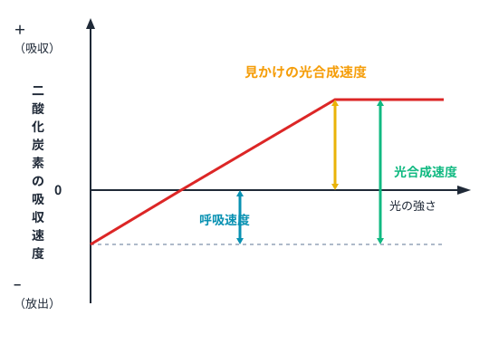

植物は光合成でご飯をつくりますが、同時に人間と同じように「呼吸」もしています。呼吸は昼も夜も止まりません。光合成と呼吸の「差し引き」がわかると、グラフの読み取り問題がスラスラ解けます。
1呼吸とは 🔴 必ず出る
呼吸（細胞呼吸）は有機物を酸素で分解してエネルギーを取り出す反応です。場所はミトコンドリア。
有機物（C₆H₁₂O₆）＋ 6O₂ → 6CO₂ ＋ 6H₂O ＋ エネルギー
| 比較 | 光合成 | 呼吸 |
|---|---|---|
| 材料 | 水・CO₂ | 有機物・O₂ |
| 産物 | 有機物・O₂ | CO₂・水・エネルギー |
| 場所 | 葉緑体 | ミトコンドリア |
| タイミング | 光があるとき | 昼夜問わず常に |
💡 最重要：植物は光合成と呼吸を同時にしています。呼吸は昼も夜も24時間止まらない！
✅ ミニテスト①（呼吸の基本）
Q1. 植物の呼吸について正しいものはどれか。
Q2. 呼吸の産物を語群から選んで入れよう。
有機物＋O₂ → ＋水＋エネルギー
二酸化炭素
酸素
有機物
2光の強さと光合成速度の関係 🔴 必ず出る
植物を暗室に入れ、光の強さを少しずつ強くしていくと、CO₂の出入りはどう変化するでしょう？

図1：光の強さとCO₂の出入りの関係（暗黒→補償点→光飽和点）
🔍 グラフの読み方
暗黒下：光合成ができないため呼吸のみ→CO₂を放出（グラフがゼロより下）
光が強くなると：光合成速度が増え、CO₂の出入りがゼロになる点（補償点）を超えてCO₂を吸収するようになる
さらに光が強くなると：光飽和点で頭打ち→それ以上強くしても速度は変わらない
光が強くなると：光合成速度が増え、CO₂の出入りがゼロになる点（補償点）を超えてCO₂を吸収するようになる
さらに光が強くなると：光飽和点で頭打ち→それ以上強くしても速度は変わらない
✅ ミニテスト②（グラフの読み方）
Q1. 暗黒下で植物が行っているのはどれか。
Q2. 補償点を超えた直後、植物のCO₂はどうなるか。
3補償点と光飽和点 — A・B・C の関係 🔴 必ず出る
グラフ上のP（補償点）・Q（光飽和点）・A・B・Cの意味を正確に覚えましょう。

図2：P＝補償点、Q＝光飽和点、A＝呼吸速度、B＝見かけの光合成速度、C＝真の光合成速度
| 記号 | 名前 | 意味 |
|---|---|---|
| P | 補償点 | 光合成速度＝呼吸速度。CO₂の出入りがゼロに見える点。 |
| Q | 光飽和点 | それ以上光を強くしても光合成速度が上がらなくなる点。 |
| A | 呼吸速度 | 植物が常に一定の割合でおこなっている呼吸の速さ。暗黒下で測定。 |
| B | 見かけの光合成速度 | 実験で測れるCO₂吸収量。呼吸を引いた値。 |
| C | 真の光合成速度 | 本当に行われている光合成の速さ。C＝A＋B |
💡 大事な式：真の光合成速度（C）＝ 呼吸速度（A）＋ 見かけの光合成速度（B）
計算例：A＝3、B＝7 → C＝3＋7＝10
計算例：A＝3、B＝7 → C＝3＋7＝10
✅ ミニテスト③（補償点・A・B・C）
Q1. 光合成速度と呼吸速度が等しくなり、CO₂の出入りがゼロに見えるときの光の強さを何というか。
Q2. 呼吸速度が5、見かけの光合成速度が8のとき、真の光合成速度はいくつか。
★用語まとめ
呼吸速度（A）
暗黒下のCO₂放出量。昼夜一定。ミトコンドリアで行われる。
見かけの光合成速度（B）
実験で測れるCO₂吸収量。C－A。
真の光合成速度（C）
C＝A＋B。本当の光合成速度。
補償点（P）
光合成＝呼吸。CO₂の出入りゼロに見える光の強さ。
光飽和点（Q）
それ以上光を強くしても光合成速度が上がらなくなる点。